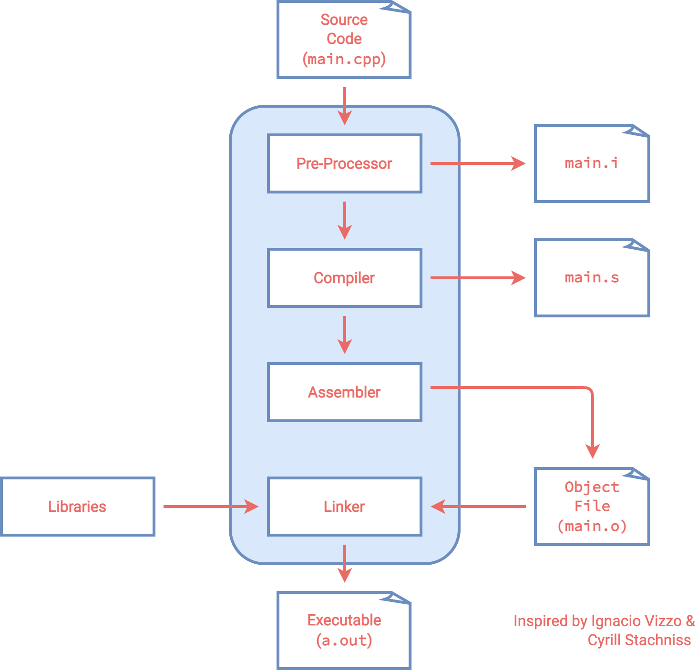
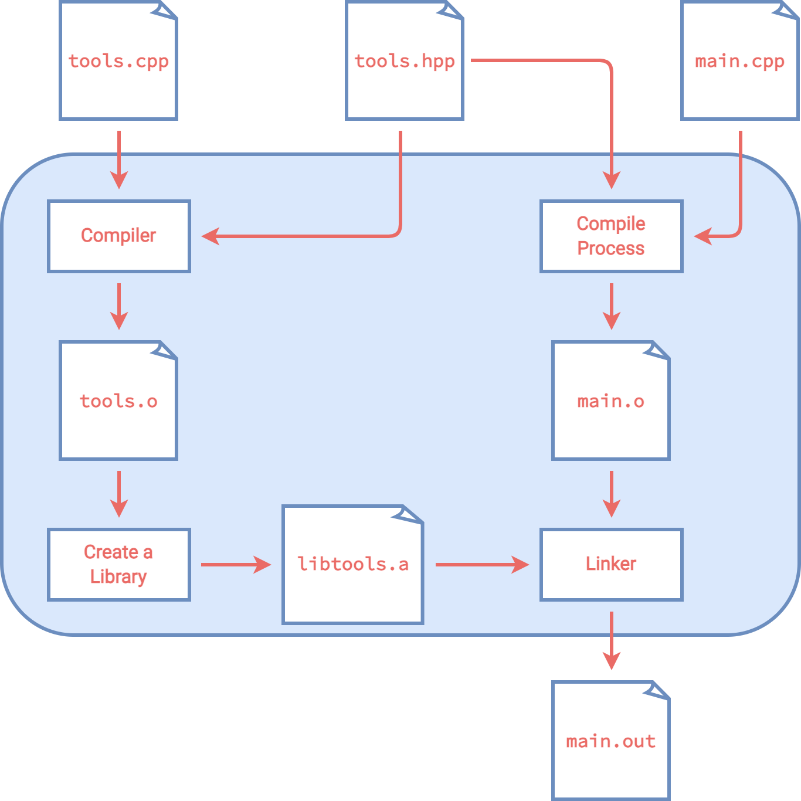

Compiling 101¶
Let’s start with the hello_world example
#include<iostream>
int main(){
std::cout << "Hello World" << std::endl;
return 0;
}
This can be compiled using
clang++ hello_world.cpp -o a.out
# or
g++ hello_world.cpp -o a.out
Here clang++ and g++ are two different compilers, hello_world.cpp specifies the name of the .cpp file that we want to compile, -o tag means we want to specify the name of the output executable, and a.out is the name of the executable that we chose. Run the command with the hello_world.cpp example in the compiling_101 file and see if it works.
Now that we see how we can compile files, let’s try to understand what is going on behind the scene.
How the compiler works¶

When you compile the hello world example, four steps occurred
Pre-process:
clang++ -E main.cpp > main.iCompile:
clang++ -S main.iAssembly:
clang++ -c main.sLink:
clang++ main.o -o main
The example files are shown in the compile_process folder.
Pre-processor¶
The task of the pre-processor is to replace any line starting with # with the corresponding content. The most common one is the #include operation, which includes the corresponding header file within the .i file. We can see an example of this by creating two files
// main.cpp
#include <iostream>
int main()
{
std::cout << "Hello World" << std::endl;
return 0;
}
and
// _main.cpp
int main()
{
std::cout << "Hello World" << std::endl;
return 0;
}
After we run
clang++ -E main.cpp > main.i
clang++ -E _main.cpp > _main.i
We can see that _main.i only includes a few lines. On the other hand, main.i includes the lines in _main.i and in addition has all of the lines included from <iostream>.
Another example is bracket.cpp. We first create a header file bracket.h that only includes a curly bracket. Then we replace the last curly bracket with the pre-processing operation #include "bracket.h". If we then run
clang++ -E bracket.cpp > bracket.i
we can see the curly bracket is restored within bracket.i. We also used the operation
#define integer int
If we take a look at bracket.i, we can see all of the integers has been replaced with int. This shows that the job of the pre-processor is to only replace the # operations. Apart from #include and #define, we also have a few more pre-processing operations see here for a description.
Compiler¶
The job of the compiler is to transform the pre-processed C++ code into assembly code, which is easier to understand for the machine. Take a look at main.s for the assembly version of main.cpp.
Assembler¶
The job of the assembler is to transform the assembly code into binaries (.o object file).
Linker¶
The linker then links the object file and the libraries to generate the final executable.
Libraries¶

A library is a collection of multiple object files that are logically connected. There are two types of libraries: static and dynamics.
Static libraries (
lib*.afiles) are faster, but they take a lot of memory and becomes part of the final executable.Dynamic libraries (
lib*.sofiles) are slower, but they can be copied and referenced by a program.
Usually, we would separte the declarations and implementations of a library. The declarations will usually be stored within a header file (.hpp file), while the implementations will be within a .cpp file.
In the compilation process, the header file is used in the pre-processing phase. All of the declarations will be copied into the a single .i file, and an object file will be generated. Then, the linker will map the declarations to a compiled library object that contains their implementations. Thus, to use a library, we would need two things:
header file
library_api.hppcompiled library object
library_api.a
Usually a .a file would include multiple .o files. The steps to compile main.cpp is as follows:
compile the modules:
clang++ -std=c++17 -c tools.cpp -o tools.oorganize the modules into a library:
ar rcs libtools.a tools.o <other-modules>link libraries when building the project:
clang++ -std=c++17 main.cpp -L . -ltools -o main, where-L <dir>adds the directory to the library search path, and-l<library-name>is specifying the name of the library file. Iflib<name>.ais the library object, then we use-l<name>for linking.